Lake Tahoe Travel Guide
Largest alpine lake in North America, Lake Tahoe is a major tourist attraction and home to winter sports, summer outdoor recreation, and scenery enjoyed throughout the year
General Information
How to Get There
From South Lake Tahoe, CA: Follow US-50, CA-89, or NV-28 depending on your destination around the lake, with the South Shore serving as a central gateway to beaches, marinas, trails, and scenic viewpoints throughout the Lake Tahoe Basin.
Overview
Lake Tahoe is a crystal-clear alpine lake straddling the California–Nevada line in the Sierra Nevada. At 6,225 feet, it is the largest alpine lake in North America, and visitors come for its deep blue water, sandy beaches, and views of snow-capped peaks.
It is a year-round destination. Winter brings some of the West’s best skiing and snowboarding, while summer draws swimmers, paddlers, boaters, hikers, and mountain bikers. Lakeside casinos on the Nevada side, lakefront dining, and scenic drives on U.S. 50, CA-89, and NV-28 round out the trip.
Geography
Lake Tahoe is about 22 miles long and 12 miles wide, and at 1,645 feet it is the second-deepest lake in the United States. It sits in a basin formed by faulting and later carved by glaciers, ringed by the Sierra Nevada to the west and the Carson Range to the east. About two-thirds of the shoreline is in California. Its only outlet, the Truckee River, flows northeast toward Reno. The highest peak in the basin is Freel Peak at 10,891 feet.
History
The Washoe people have lived around the lake for thousands of years, and the name Tahoe comes from the Washoe word dá’aw, “the lake.” John C. Frémont became one of the first Americans to record seeing the lake in 1844. The 1859 Comstock silver strike in Nevada led to heavy logging of the basin, and the lake later became a resort area with grand lakeside estates. Squaw Valley hosted the 1960 Winter Olympics, and the Tahoe Regional Planning Agency was created in 1969 to protect the lake’s clarity.
Cities and Towns
South Lake Tahoe is the largest city and is the hub for Heavenly ski resort, beaches, and the casinos of Stateline, Nevada. On the north shore, Tahoe City, Kings Beach, and Incline Village offer quieter lakeside towns, while Truckee, a short drive north, is a historic railroad town with a walkable downtown.
National Protected Areas
Lake Tahoe has no national park or national monument of its own, and much of the surrounding land is national forest. The Pacific Crest National Scenic Trail runs along the ridges above the lake, and Yosemite National Park is about a three-hour drive south.
State Parks and Historic Sites
Emerald Bay State Park is the most photographed spot on the lake, with Vikingsholm Castle and Fannette Island. D. L. Bliss State Park and Sugar Pine Point State Park, home to the historic Ehrman Mansion, preserve beaches and trails on the west shore. Lake Tahoe Nevada State Park includes Sand Harbor’s granite boulders and turquoise coves, and Donner Memorial State Park near Truckee tells the story of the Donner Party.
Seasons and Best Time to Visit
Winter is ski season, with resorts such as Heavenly, Palisades Tahoe, Northstar, and Kirkwood usually open from late fall through spring. Spring brings snowmelt, waterfalls, and fewer crowds, though some high trails and roads remain closed. Summer is the busiest season for beaches, boating, and hiking, with warm days and cool nights. Fall brings aspen color and the kokanee salmon run at Taylor Creek, and lodging prices often drop after Labor Day.
This article uses material from the Wikipedia article "Lake Tahoe", and "South Lake Tahoe", which is released under the Creative Commons Attribution-Share-Alike License 3.0. Additional information is from California State Parks and the Pacific Crest Trail Association.
★Featured Locations and Trails
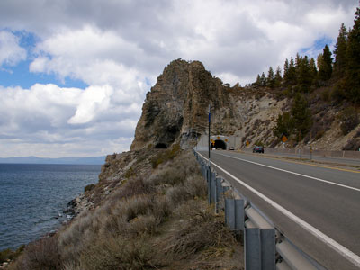
Davemeistermoab, CC BY-SA 4.0, via Wikimedia Commons; Image Size Adjusted

Cave Rock
Stone formation is a column of volcanic andesite standing about 250 feet tall with US 50 passing under it through the Cave Rock Tunnel
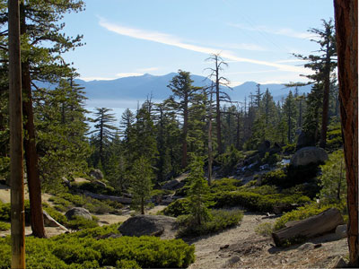
Rick Cooper, CC BY 2.0, via Wikimedia Commons; Image Size Adjusted

D. L. Bliss State Park
State park located on the western shore of Lake Tahoe just north of Emerald Bay State Park
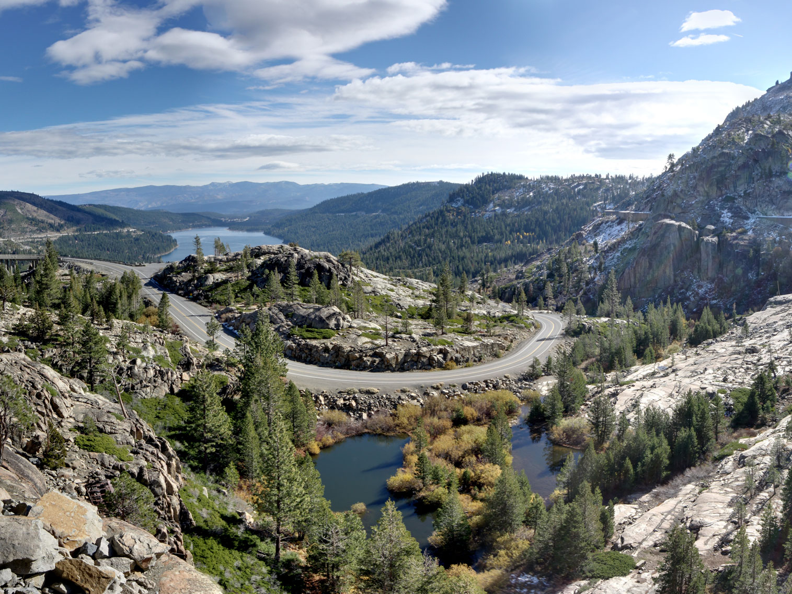
Rick Cooper, CC BY 2.0, via Wikimedia Commons; Image Size Adjusted
Donner Memorial State Park
State park preserving the site of the Donner Camp, where members of the ill-fated Donner Party were trapped by weather during the winter of 1846-1847
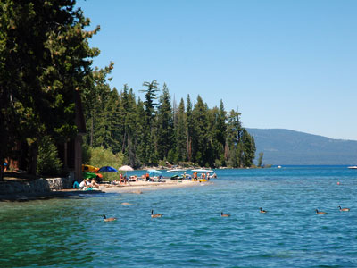
DimiTalen (talk · contribs), CC BY-SA 3.0, via Wikimedia Commons; Image Size Adjusted

Ed Z'berg Sugar Pine Point State Park
State park occupying nearly two miles of the western shore of Lake Tahoe and a total of about 2,500 acres of forested mountains
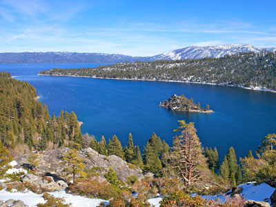
John Palmer / California Department of Parks and Recreation, Public domain, via Wikimedia Commons; Image Size Adjusted

Emerald Bay State Park
State park centered on Lake Tahoe's Emerald Bay, featuring Eagle Falls and Vikingsholm, a 38-room mansion
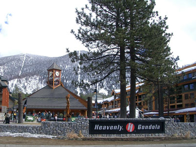
The original uploader was ChrisRuvolo at English Wikipedia., CC BY 2.0, via Wikimedia Commons; Image Size Adjusted

Heavenly Mountain Resort
Ski resort located on the California-Nevada border in South Lake Tahoe in the Sierra Nevada Mountain Range
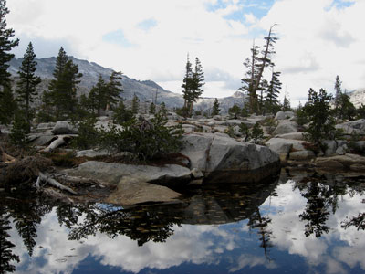
brewbooks from near Seattle, USA, CC BY-SA 2.0, via Wikimedia Commons; Image Size Adjusted
.jpg){kind=link}
Lake Aloha Trail
Large shallow backcountry reservoir located at an elevation of 8,116 feet in the Sierra Nevada Range, west of Lake Tahoe
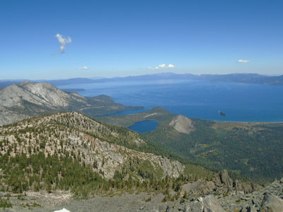
Pimlico27, CC BY-SA 3.0, via Wikimedia Commons; Image Size Adjusted

Mount Tallac Trail
Mountain peak southwest of Lake Tahoe where an estimated 10,000 climb the peak each year via routes approaching the summit
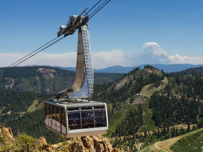
© Frank Schulenburg, CC BY-SA 3.0, via Wikimedia Commons; Image Size Adjusted

Palisades Tahoe / Squaw Valley
Ski Resort and the host site for the 1960 Winter Olympics, covers 3,600 acres, employing 30 chairlifts
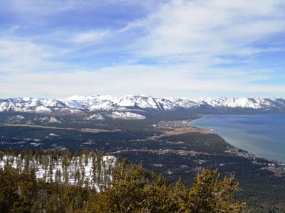
Blake Everett, CC0, via Wikimedia Commons; Image Size Adjusted

South Lake Tahoe
Town south of Lake Tahoe, mainly geared towards tourism, with T-shirt shops, restaurants, hotels, and Heavenly Mountain Ski Resort
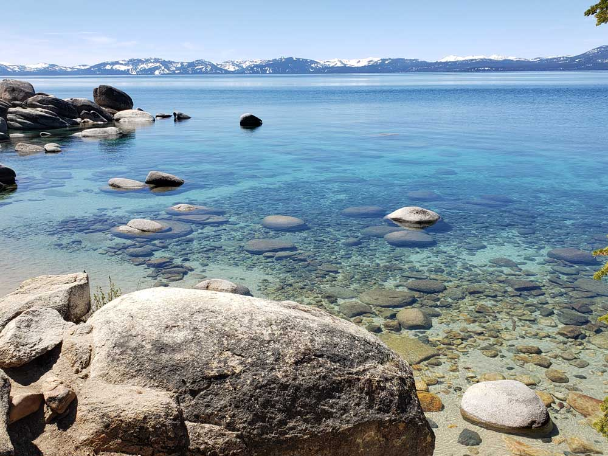
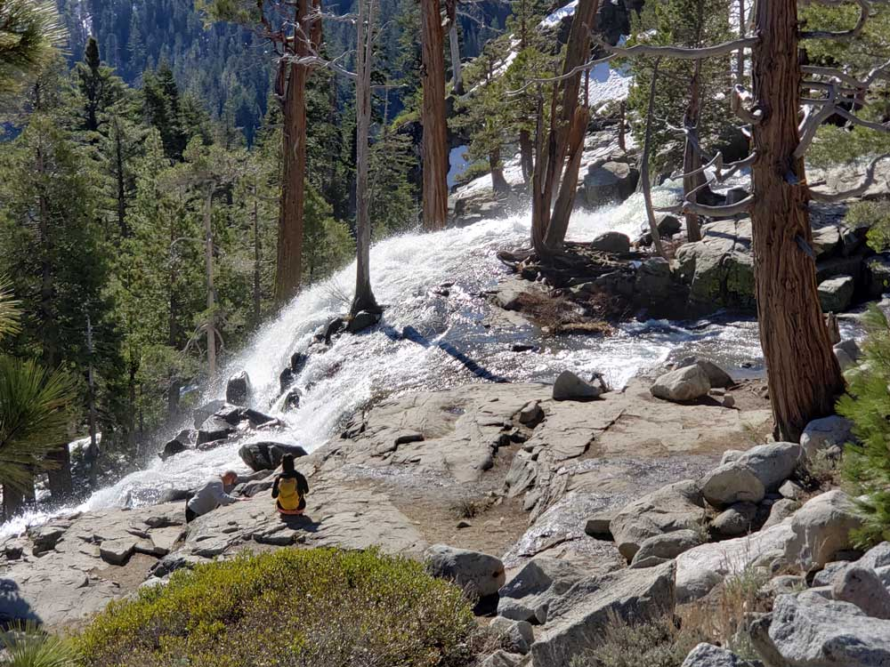
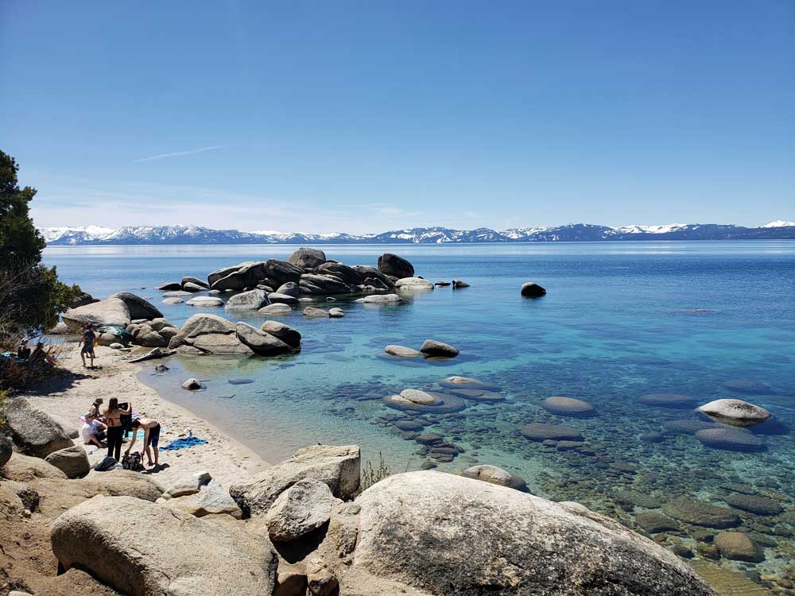
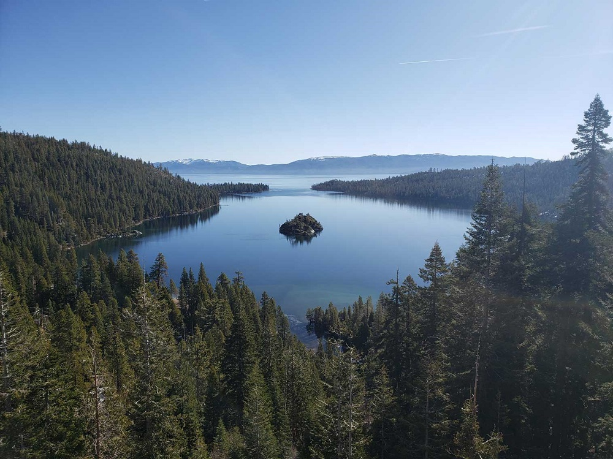